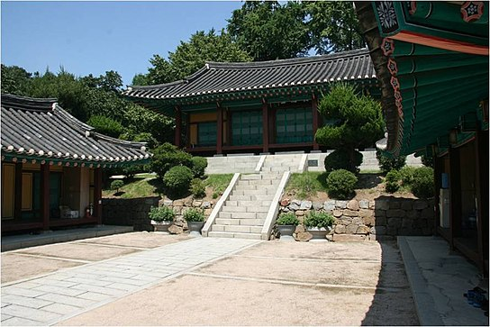
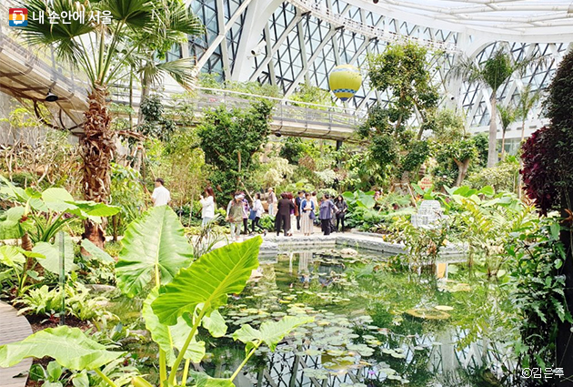
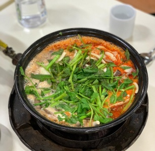
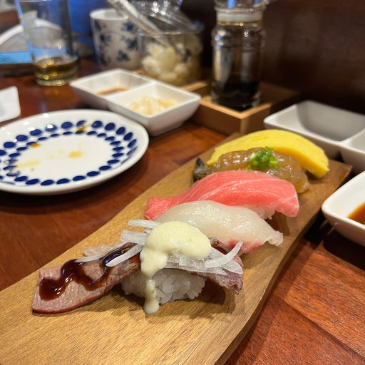
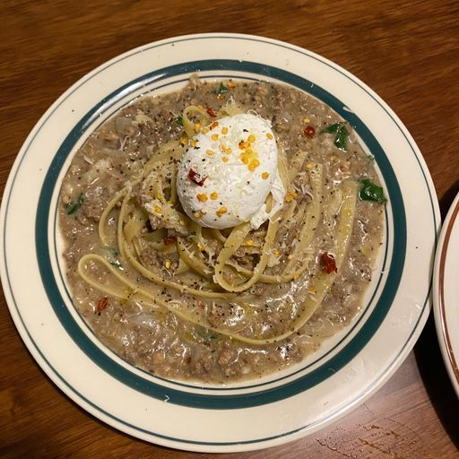

양천향교지서울특별시 강서구 가양동에 있는 문화재 시설. 간단하게 '양천향교'라고도 불리며, 현재 서울특별시 관내에 있는 유일한 지방 향교이다.조선왕조 때인 1411년에 처음 세워졌다. 평점 2.88/5 |
 |
서울식물원서울특별시 강서구 마곡지구에 조성한 도심 공원. 면적은 축구장(7140㎡)의 약 70배 크기인, 50만4000㎡(15만2460평)이다 영국 에덴프로젝트, 싱가포르의 보타닉 가든를 벤치마킹한 식물원이다. 온실이 식물원을 대표할만한 공간이긴 하지만, 그게 아니더라도 넓은 호수공원이나 잔디마당, 한옥건물이 있어 한가로이 쉬기에 좋다. 다만, 그늘이 적기 때문에 한여름은 피하는게 좋다. 평점 4.47/5 |
 |
국립항공박물관국립항공박물관은 대한민국 항공의 역사와 미래를 알리고 교육하기 위해 만들어진 국립 박물관이다. 평점 4.51/5 |
등촌최월선칼국수서울특별시 강서구 화곡로64길 68 추천메뉴 : 매운버섯탕 칼국수 평점 3.7/5 |
 |
쇼와서울특별시 강서구 양천로47가길 43 추천메뉴 : 초밥 평점 3.5/5 |
 |
웜테이블서울특별시 강서구 공항대로49길 5-17 1F 추천메뉴 : 화이트라구파스타 평점 4.3/5 |
 |